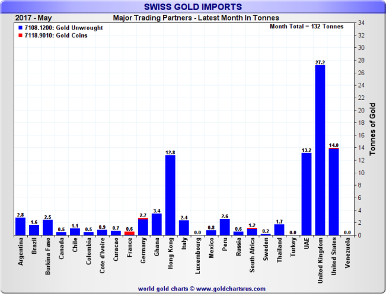

Почему золото и почему сейчас?
- Отсутствие открытия новых месторождений, постоянный рост стоимости добычи, более 50% всех золотодобывающих компаний имеют даже при отсутствии капиталовложений на разработку новых месторождений стоимость добычи более 1200 долл. за унцию
- Бесконтрольный рост денежной массы со стороны ЦБ Америки, Европы, Японии, Швейцарии и Англии, дефицита бюджета (пенсионные и др. обязательства), торгового баланса в ведущих экономиках, рост систематического риска на финансовых рынках
- Значительный инвестиционный спрос со стороны розничных клиентов: монеты, слитки, биржевые фонды, в последний квартал особо отметим спрос со стороны Европы. Значительные покупки золота на открытом и внутренних рынках со стороны ЦБ Китая, России и пр.
Мировая добыча золота
- Пик добычи придется на 2019 год и далее будет снижаться
Разведка новых месторождений
- Объем разведанного золота упал на 85% за последние 10 лет

Разведанные запасы

Пополнение разведанных запасов
- Менеджмент вынужден заниматься сделками слияния и поглощения для компенсации снижающихся резервов

Разведка новых месторождений становится все более дорогостоящей в то время как компании снижают затраты на разработку

Поставки золота в Шанхае

Спрос на золото в Китае и Индии превышает мировую добычу

Динамика объема инвестиций в биржевые фонды и цены на золото
Наиболее прозрачные данные по импорту золота
и экспорта
Запасы золота на крупнейшей торговой площадке
Дефицит и уникальность золота


Альтернативы золоту
Долговой рынок?
Рост предложения
Снижение стоимости
Создание нового пузыря

Один миллиард долларов
Один триллион долларов
Государственный долг США - двадцать триллионов долларов
Обязательства США - сто двадцать триллионов долларов
Рынок акций?
- переоцененный
- перекупленный
- эйфорийный настрой инвесторов

По множеству показателей выше справедливой оценки более чем на 150%
Недвижимость?

Индикативная стоимость жилой недвижимости к совокупному годовому доходу до налогов

Инвестиционные инструменты
-
Сегрегированное золото:
- Золотые монеты, украшения
- Золотые мерные слитки
-
Обезличенное золото:
- Биржевые фонды
- Металлические счета
- Золотые сертификаты
-
Суррогаты:
- Акции золотодобывающих компаний
- Биржевые / внебиржевые Фьючерсы, опционы, CFD на золото